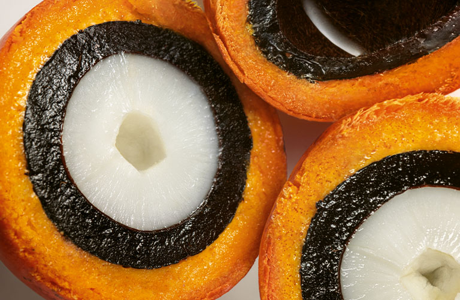
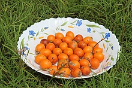
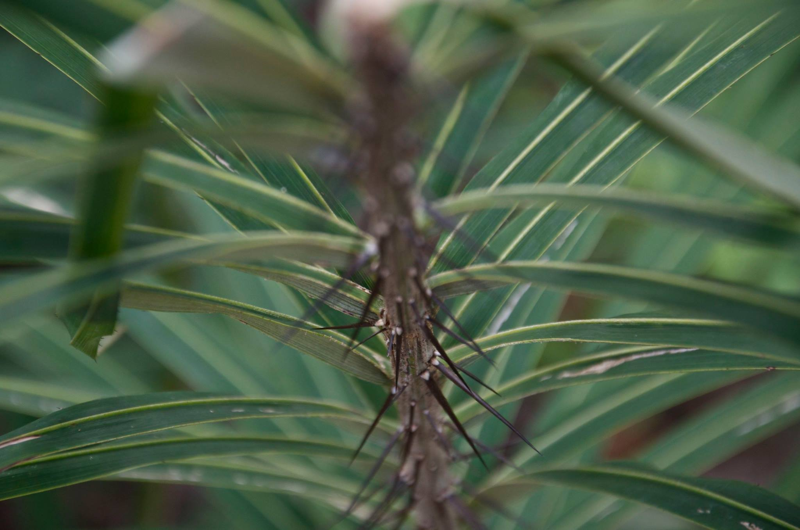

Tucum

O tucumã ou tukumã é o fruto de polpa fibrosa e casca amarelo-esverdeada ou avermelhada do tucumanzeiro (Astrocaryum vulgare), palmeira que pode chegar até os 15 metros de altura. Seu nome vem do Tupi e significa “fruta de planta espinhosa”, característica das folhas com espinhos negros da árvore.
Embora estima-se que a espécie tenha surgido na Colômbia, seu fruto tem grande popularidade no estado do Amazonas, especialmente na culinária manauara, com o tradicional X-Caboquinho e outras iguarias. Isso porque além de gostoso, ele também é altamente nutritivo e rico em ômega 3, vitaminas A, B1 e C, propriedades que melhoram o funcionamento do organismo.
Essas, aliás, são substâncias antioxidantes que fazem do tucumã um excelente aliado no combate aos sinais de envelhecimento precoce do corpo. Não à toa, a fruta amazônica tem sido cada vez mais utilizada para outras finalidades, principalmente na cosmética em cremes e loções corporais.
Ocorre na mata atlântica, do sul da Bahia até o Rio Grande do Sul. Muito usado para pesca do pacu nas bacias pantaneiras. Das folhas, faz-se uma fibra muito forte e útil. As sementes fornecem um óleo alimentício. Seu palmito é usado em diversas culinarias. É também comum entre os povos indígenas Guarani, do interior do Brasil, a utilização do Tucum para manufatura do "arco de tucum", denominado por esta de Guyrapa tuku gui gua.
O fruto do Tucum
Este trabalho trata da avaliação das características morfológicas e da densidade das palhas provenientes das folhas da palmácea Bactris inundata Martius. A densidade básica das folhas de tucum (Bactris inundata) apresentou-se bastante uniforme no momento da sua determinação, tendo sido observado um valor médio de 0,342 g/cm³. Bactris inundata apresentou duas fibras diferenciadas pelas suas características morfológicas. Uma, com comprimento médio de 0,69 mm, largura de 10,56 µm, lume de 2,63 µm e espessura da parede de 3,97 µm, classificada como curta; outra, com comprimento médio de 2,33 mm, largura de 7,66 µm, lume de 1,85 µm e espessura da parede de 2,91 µm, classificada como longa.

A fibra "A" de Bactris inundata apresentou um baixo coeficiente de flexibilidade (25,12%) e um razoável índice de enfeltramento (66,85). A fibra "B" de Bactris inundata apresentou um baixo coeficiente de flexibilidade (24,09%) e um altíssimo índice de enfeltramento (313,59). As relações entre as dimensões das fibras indicaram que estas podem ser utilizadas na produção de papel kraft com bons índices de resistência físico- -mecânica em algumas de suas propriedades.
A palmeira
Palmeira entouceirada, de 2 a 6 m de altura, com estipe de 3 a 4 cm de diâmetro, espinhoso. Folhas pinadas, limbo, pecíolo e ráquis espaçadamente cobertos por espinhos amarelados, sendo negros na base e no ápice, com 5,5 cm de comprimento, com até 60 folíolos por lado, lineares, regularmente arranjados, posicionados em diferentes planos. Espádice infrafoliar, com 12 a 27 ramos, brácteas pedunculares, moderadamente cobertas por espinhos de 1 cm de comprimento, de coloração amarelada a negra. Frutos globosos, achatados, com cerca de 1,5 cm de comprimento e 2,0 cm de diâmetro, de coloração roxa-escura.